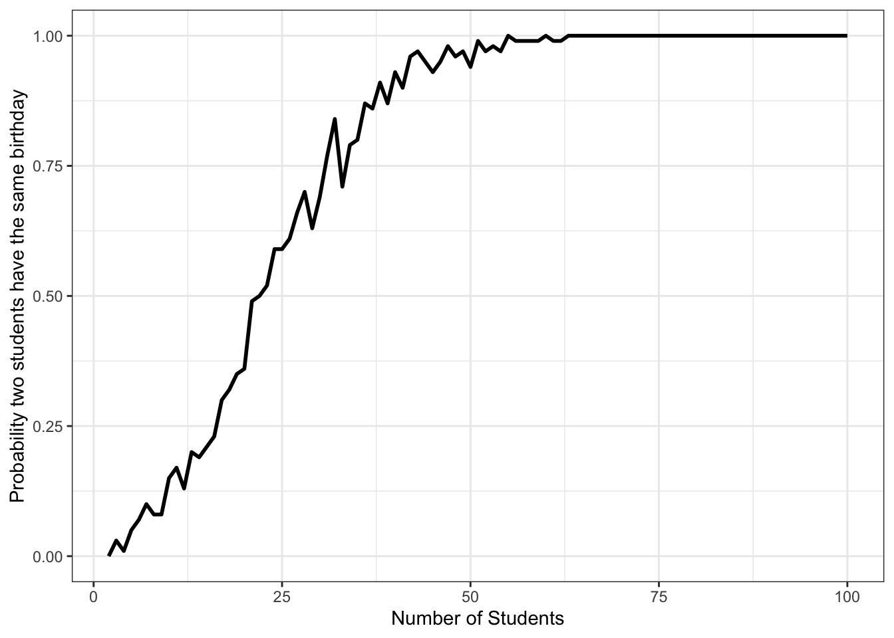

16. 可視化[基礎]
16.1 本章の内容
- 棒グラフ
- ヒストグラム
- 散布図
- 折れ線グラフ
- 箱ひげ図
16.2 実習用データ
実習の前に本章で使用するデータとggplot2パッケージが含まれているtidyverseを読み込みます。
library(tidyverse)
Station_df <- read_csv("Data/Stations.csv")
Country_df <- read_csv("Data/Countries.csv")
COVID19_df <- read_csv("Data/COVID19_Worldwide.csv",
col_types = c("dccdddddd"))全国の9150鉄道駅のデータを収集したものです。データには駅の地理的情報や、路線、事業者の情報と平均利用者数 (人/日)が含まれています。利用者数の情報は国土交通省の国土数値情報「駅別乗降客数データ」から、その他の情報は「駅データ.jp」から入手したものです。両データの結合は緯度と経度を基準にマッチングし、駅名が一致するケースのみ残したものです。したがって、不正確にマッチングされたケースが存在する可能性があります（とりわけ乗換駅など）。この実習用データを使って、何らかの意味のある分析はできません。あくまでも実習用データとしてお使いください。
各変数の詳細は以下の通りです。
| 変数名 | 説明 | 詳細 |
|---|---|---|
ID
|
駅ID | |
Station_Name
|
駅名 | |
Pref
|
所在地 | 都道府県 (ID) |
Zipcode
|
所在地 | 郵便番号 |
Address
|
所在地 | 住所 |
Longitude
|
経度 | |
Latitude
|
緯度 | |
Station_Status
|
駅の状態 | 0:運用中 / 1:運用前 / 2:廃止 |
Line_ID
|
路線ID | |
Line_Name
|
路線名 | |
Line_Status
|
路線の状態 | 0:運用中 / 1:運用前 / 2:廃止 |
Company_ID
|
事業者ID | |
Company_Name
|
事業者名 | |
Company_Type1
|
事業者タイプ1 | 0:その他 / 1:JR / 2:大手私鉄 / 3:準大手私鉄 |
Company_Type2
|
事業者タイプ2 | 1:JR / 2:公営 / 3:民営 / 4:第三セクター |
Company_Status
|
事業者の状態 | 0:運用中 / 1:運用前 / 2:廃止 |
P2011
|
2011年度利用者数 | 単位は(人/日) |
P2012
|
2012年度利用者数 | 単位は(人/日) |
P2013
|
2013年度利用者数 | 単位は(人/日) |
P2014
|
2014年度利用者数 | 単位は(人/日) |
P2015
|
2015年度利用者数 | 単位は(人/日) |
P2016
|
2016年度利用者数 | 単位は(人/日) |
P2017
|
2017年度利用者数 | 単位は(人/日) |
| 変数名 | 説明 | 詳細 |
|---|---|---|
Country
|
国名 | |
Population
|
人口 | 人 |
Area
|
面積 | km\(^2\) |
GDP
|
国内総生産 (GDP) | 米ドル |
PPP
|
GDP (競売力平価): | 米ドル |
GDP_per_capita
|
一人あたりGDP | 米ドル |
PPP_per_capita
|
一人あたりGDP (購買力平価) | 米ドル |
G7
|
G7構成国 | 1:構成国, 0:構成国以外 |
G20
|
G20構成国 | 1:構成国, 0:構成国以外 |
OECD
|
OECD構成国 | 1:構成国, 0:構成国以外 |
HDI_2018
|
人間開発指数 | 2018年基準 |
Polity_Score
|
民主主義の程度 | Polity IVから; -10:権威主義〜10:民主主義 |
Polity_Type
|
民主主義の程度 (カテゴリ) | |
FH_PR
|
政治的自由の指標 | 2020年基準; Freedom Houseから |
FH_CL
|
市民的自由の指標 | 2020年基準; Freedom Houseから |
FH_Total
|
政治的自由と市民的自由の合計 | 2020年基準; Freedom Houseから |
FH_Status
|
総合評価 | F:完全な自由; PF:一部自由; NF:不自由 |
| 変数名 | 説明 |
|---|---|
ID
|
ID |
Country
|
国名 |
Date
|
年月日 |
Confirmed_Day
|
新規感染者数（人） |
Confirmed_Total
|
累積感染者数（人） |
Death_Day
|
新規死亡者数（人） |
Death_Total
|
累積死亡者数（人） |
Test_Day
|
新規検査数（人） |
Test_Total
|
累積検査数（人） |
16.3 棒グラフ
棒グラフについては以下の2つのタイプについて説明します。
- ある変数の数の表す棒グラフ
- 各グループの統計量を表す棒グラフ
前者は「データ内に北海道のケースはいくつあるか、東京の行はいくつあるか」のようなものであり、後者は「都道府県ごとの利用者数の平均値はいくつか」を出力するグラフです。
16.3.1 ケース数のグラフ
まず、Station_dfのPref変数における各値の頻度数を棒グラフとして出してみましょう。表としてまとめる簡単な方法はtable()関数があります。
##
## 1 2 3 4 5 6 7 8 9 10 11 12 13 14 15 16 17 18 19 20 21 22
## 553 157 178 172 143 119 186 127 113 134 231 334 695 367 193 173 72 123 72 267 182 218
## 23 24 25 26 27 28 29 30 31 32 33 34 35 36 37 38 39 40 41 42 43 44
## 474 227 116 233 495 370 129 121 72 116 161 237 146 76 98 137 167 343 76 110 149 83
## 45 46 47
## 73 117 15ケース数の棒グラフは、都道府県名を横軸に、ケース数を縦軸にしたグラフですが、都道府県変数がcharacter型でなく、numeric型になっています。社会調査に慣れている読者なら数字を見るだけでどの都道府県かが分かるでしょうが、図表にする時には、ちゃんと「1は北海道」、「2は青森県」、…のようにラベルを付ける必要があります。図は左側が北海道、右側が沖縄県にしたいので、順番が必要であり、factor型に変換した方がいいでしょう。ただし、1から47までの全ての値にラベルを付けるのは以下のようにかなり手間のかかる作業です。
Station_df <- Station_df %>%
mutate(Pref = factor(Pref, levels = 1:47,
labels = c("北海道", "青森県", "宮城県",
...,
"鹿児島県", "沖縄県")))したがって、今回は第9章で使いました、Vote.csvを使います。このデータには47都道府県の選挙結果が含まれており、都道府県名 (Pref変数)も地方公共団体コード順になっています。このデータを読み込み、Pref_dfという名で保存します。
## Parsed with column specification:
## cols(
## ID = col_double(),
## Pref = col_character(),
## Zaisei = col_double(),
## Over65 = col_double(),
## Under30 = col_double(),
## LDP = col_double(),
## DPJ = col_double(),
## Komei = col_double(),
## Ishin = col_double(),
## JCP = col_double(),
## SDP = col_double()
## )## [1] "北海道" "青森県" "岩手県" "宮城県" "秋田県" "山形県" "福島県"
## [8] "茨城県" "栃木県" "群馬県" "埼玉県" "千葉県" "東京都" "神奈川県"
## [15] "新潟県" "富山県" "石川県" "福井県" "山梨県" "長野県" "岐阜県"
## [22] "静岡県" "愛知県" "三重県" "滋賀県" "京都府" "大阪府" "兵庫県"
## [29] "奈良県" "和歌山県" "鳥取県" "島根県" "岡山県" "広島県" "山口県"
## [36] "徳島県" "香川県" "愛媛県" "高知県" "福岡県" "佐賀県" "長崎県"
## [43] "熊本県" "大分県" "宮崎県" "鹿児島県" "沖縄県"これを使わない理由はないでしょう。factor()内のlabels引数の値としてPref_dfのPref列を使います。
Station_df <- Station_df %>%
mutate(Pref = factor(Pref, levels = 1:47, labels = Pref_df$Pref))
Station_df## # A tibble: 9,150 x 23
## ID Station_Name Pref Zipcode Address Longitude Latitude Station_Status Line_ID
## <dbl> <chr> <fct> <chr> <chr> <dbl> <dbl> <dbl> <dbl>
## 1 1.11e6 函館 北海道… 040-00… 北海道函館市… 141. 41.8 0 11101
## 2 1.11e6 五稜郭 北海道… 041-08… 函館市亀田本… 141. 41.8 0 11101
## 3 1.11e6 桔梗 北海道… 041-08… 北海道函館市… 141. 41.8 0 11101
## 4 1.11e6 大中山 北海道… 041-11… 亀田郡七飯町… 141. 41.9 0 11101
## 5 1.11e6 七飯 北海道… 041-11… 亀田郡七飯町… 141. 41.9 0 11101
## 6 1.11e6 新函館北斗 北海道… 041-12… 北海道北斗市… 141. 41.9 0 11101
## 7 1.11e6 仁山 北海道… 041-11… 亀田郡七飯町… 141. 41.9 0 11101
## 8 1.11e6 大沼 北海道… 041-13… 北海道亀田郡… 141. 42.0 0 11101
## 9 1.11e6 大沼公園 北海道… 041-13… 北海道亀田郡… 141. 42.0 0 11101
## 10 1.11e6 赤井川 北海道… 049-21… 茅部郡森町字… 141. 42.0 0 11101
## # … with 9,140 more rows, and 14 more variables: Line_Name <chr>, Line_Status <dbl>,
## # Company_ID <dbl>, Company_Name <chr>, Company_Type1 <dbl>, Company_Type2 <dbl>,
## # Company_Status <dbl>, P2011 <dbl>, P2012 <dbl>, P2013 <dbl>, P2014 <dbl>,
## # P2015 <dbl>, P2016 <dbl>, P2017 <dbl>Pref変数がfactor型となり、ラベルも付きました。それではグラフを作ってみます。データはStation_dfであり、使う幾何オブジェクトはgeom_bar()です。ここで必要な情報は横軸、つまり都道府県のみです。縦軸も「ケース数」という情報も必要ですが、ggplot2が勝手に計算してくれるので、指定しません。

使用しているPCのOSによっては、このように文字化けすることもあります。この場合は、プロットで使用するフォント群 (font family)を指定する必要があります。たとえば、macOSの場合、ヒラギノ角コジックW3がよく使われます (W0からW9まであり、数字が大きくなると太字になります)。フォント群の指定はtheme_*()関数のbase_family引数で行います。ここのtheme_*()ですが、*の箇所にはgrayやbw、minimalなどが入ります。ggplot2が提供しているテーマについてはここを参照してください。また、ggthemesやegg、hrbrthemesなどのパッケージを導入すると様々なテーマが利用可能になります。デフォルトのテーマはgrayですが、今回はbwにし、ヒラギノ角コジックW3 ("HiraKakuProN-W3")をフォント群として指定します。

問題は、都道府県名が重なってしまったところです。これを解決するためには都道府県名を90度回転すればいいでしょう。X軸のテキストはtheme()関数内のaxis.text.x引数で調整します。これらの機能については後に説明しますので、ここではとりあえず入力してみます。
Station_df %>%
ggplot() +
geom_bar(aes(x = Pref)) +
theme_bw(base_family = "HiraKakuProN-W3") +
theme(axis.text.x = element_text(angle = 90, vjust = 0.5, hjust = 1))
これでグラフが完成しました。ただ、グラフ内の言語は統一する必要があるので、横軸と縦軸のラベルを"Pref"から"都道府県"へ、"count"から"ケース数"へ変更します。ラベルはlabs()関数のxとy引数で修正可能です。
Station_df %>%
ggplot() +
geom_bar(aes(x = Pref)) +
labs(x = "都道府県", y = "ケース数") +
theme_minimal(base_family = "HiraKakuProN-W3") +
theme(axis.text.x = element_text(angle = 90, vjust = 0.5, hjust = 1))
これで初めてのggplot2を用いたグラフが完成しました。
16.3.2 記述統計量のグラフ
次は記述統計量のグラフを出してみます。たとえば、都道府県ごとに2017年度平均利用者数の平均値を図示するとします。まずは、dplyrを使って、都道府県ごとに2017年度平均利用者数の平均値を計算し、Bar_df1という名で保存します。
Bar_df1 <- Station_df %>%
group_by(Pref) %>%
summarise(Passenger = mean(P2017, na.rm = TRUE),
.groups = "drop")
Bar_df1## # A tibble: 47 x 2
## Pref Passenger
## <fct> <dbl>
## 1 北海道 2837.
## 2 青森県 440.
## 3 岩手県 454.
## 4 宮城県 5288.
## 5 秋田県 219.
## 6 山形県 483.
## 7 福島県 572.
## 8 茨城県 4100.
## 9 栃木県 1894.
## 10 群馬県 1509.
## # … with 37 more rowsそれでは、このBar_df1を基にグラフを作りますが、今回は縦軸の情報も必要です。横軸はPref、縦軸はPassenger変数に指定します。そして、重要なものとしてstat引数を指定します。これはマッピングと関係なく、棒グラフの性質に関係するものなので、aes()の外側に位置します。これを指定しない場合、geom_bar()は基本的にはケース数を計算し、図示します。Passengerの値そのものを縦軸にしたい場合はstat = "identity"を指定します。後は、先ほどの棒グラフと同じです。
Bar_df1 %>%
ggplot() +
geom_bar(aes(x = Pref, y = Passenger), stat = "identity") +
labs(x = "都道府県", y = "平均利用者数 (人/日)") +
theme_minimal(base_family = "HiraKakuProN-W3") +
theme(axis.text.x = element_text(angle = 90, vjust = 0.5, hjust = 1))
16.4 ヒストグラム
ヒストグラムは棒グラフと非常に形が似ていますが、横軸が都道府県のような離散変数でなく、連続変数であるのが特徴です。連続変数をいくつの区間に分け、その区間内に属するケース数 (度数)を示したのがヒストグラムです。連続変数を扱っているため、棒間に空間がありません。それでもケース数の棒グラフと非常に似通っているため、マッピングの仕方も同じです。異なるのは幾何オブジェクトがgeom_bar()でなく、geom_histogram()に変わるくらいです。ここでは2017年度平均利用者数 (P2017)変数のヒストグラムを作ってみます。
Station_df %>%
ggplot() +
geom_histogram(aes(x = P2017)) +
labs(x = "2017年度平均利用者数 (人/日)", y = "度数") +
theme_bw(base_family = "HiraKakuProN-W3")## `stat_bin()` using `bins = 30`. Pick better value with `binwidth`.
ケース数の棒グラフのコードとほぼ同じです。今回は横軸のテキストを回転する必要がないため、theme()は省略しました。ヒストグラムを見ると平均利用者数が非常に少ない駅が多い一方、一日利用者数が約150万人のケースもあることが分かります。グラフは全データを使うため、このような結果になります。しかし、約95%の駅が一日利用者5万人未満であり、約80%が1万人未満です。上の図を見ても8000以上のケースが1つの棒としてまとめられており、分布を見るにはあまり適切ではないかも知れません。
この場合、変数を対数化することも有効です。利用者数を底10の対数化 (常用対数)をすると、150万のような非常に大きい値があっても比較的に狭い範囲内にデータを収めることが出来ます。自然対数 (底が\(e\))も可能ですが、「読む」ためのグラフとしては底が10の方が読みやすいでしょう。横軸の変数が対数化されるということは、横軸のスケールを対数化することと同じです。そのための関数としてscale_x_log10()があります。これは横軸、つまりX軸を底10の対数に変換する関数です。
Station_df %>%
mutate(P2017 = P2017 + 1) %>%
ggplot() +
geom_histogram(aes(x = P2017)) +
scale_x_log10() +
labs(x = "2017年度平均利用者数 (人/日) (対数)", y = "度数") +
theme_bw(base_family = "HiraKakuProN-W3")## `stat_bin()` using `bins = 30`. Pick better value with `binwidth`.
横軸の「1e+01」や「1e+03」で登場する「e+x」は「10のx乗」を意味します。1e+01は\(1 \cdot 10^1 = 10\)であり、1e+05は\(1 \cdot 10^5 = 100000\)です。
対数化は広い範囲のデータを縮小する時に便利ですが、それでも解釈が直感的でないと考える方もいるでしょう。それなら、データを多少犠牲し、データが多く集まっている範囲内でヒストグラムを示すことも可能です。たとえば、1日利用者数の平均が1万人未満の駅は80%であり、これらに限定したヒストグラムを作ってみましょう。そのためにはStation_dfのP2017が10000人以下の駅に絞る必要がありますが、filter()関数を使えば簡単です。
Station_df %>%
filter(P2017 <= 10000) %>%
ggplot() +
geom_histogram(aes(x = P2017)) +
labs(x = "2017年度平均利用者数 (人/日)", y = "度数") +
theme_bw(base_family = "HiraKakuProN-W3")## `stat_bin()` using `bins = 30`. Pick better value with `binwidth`.
このヒストグラムをみると、それでも利用者が非常に少ない駅が多いことが分かります。また、ヒストグラムを作成する際に以下のようなメッセージが出力されます。
## `stat_bin()` using `bins = 30`. Pick better value with `binwidth`.これは「連続変数P2017を30区間に分けました」という意味です。この区間数を調整する方法は2つあり、(1) 区間数を指定する、(2) 区間の幅を指定する方法があります。
区間数を指定することはすなわちヒストグラムの棒の数を指定することであり、bins引数で調整可能です。たとえば、棒の数を10個にするためにはgeom_histogram()内にbins = 10を指定します。棒を数えやすくするために、棒を枠線の色を白 ("white")に設定します。
Station_df %>%
filter(P2017 <= 10000) %>%
ggplot() +
geom_histogram(aes(x = P2017), bins = 10, color = "white") +
labs(x = "2017年度平均利用者数 (人/日)", y = "度数") +
theme_bw(base_family = "HiraKakuProN-W3")
数えてみると棒が10個だということが分かります。
他にも区間の幅を指定することも可能です。区間の幅は棒の幅と一致します。たとえば、棒の幅を2000にしてみましょう。あまり意味はありませんが、棒の色は白、枠線の色は黒とします。また、X軸のテキストも修正してみましょう。上の図だと「0, 2500, 5000, 7500, 10000」になっていますが、これを0から10000まで1000刻み (=seq(0, 10000, by = 1000))にします。これはscale_x_continuous()関数で調整しますが、詳しい解説は後にします。
Station_df %>%
filter(P2017 <= 10000) %>%
ggplot() +
geom_histogram(aes(x = P2017),
binwidth = 2000, fill = "white", color = "black") +
# 連続変数で構成されるX軸を修正
scale_x_continuous(breaks = seq(0, 10000, 1000),
labels = seq(0, 10000, 1000)) +
labs(x = "2017年度平均利用者数 (人/日)", y = "度数") +
theme_bw(base_family = "HiraKakuProN-W3")
ヒストグラムが出力されましたが、棒の幅がbinwidthで指定した2000と一致することが分かります。
ただし、ここで棒の数が6つであることに疑問を持つ読者もいるでしょう。データの範囲は0から10000で、2000刻みの棒を書いているから棒は5つのはずです。これはggplot2の基本仕様です。ヒストグラムは度数分布表を基に作成されますが、本グラフの度数分布表は以下のようになります。
| 階級 | 度数 |
|---|---|
| -1000~1000 | 5355 |
| 1000~3000 | 1009 |
| 3000~5000 | 472 |
| 5000~7000 | 267 |
| 7000~8000 | 224 |
| 8000~11000 | 89 |
簡単に言うと、ヒストグラムの最初の棒は0を中央にします。これによってヒストグラムの境界線 (boundary)が、データより左右に1000広くなります。もし、これを調整したい場合は、boundary引数を指定します。指定しない場合、boundaryは「棒の広さ / 2」となります。棒がデータの範囲を超えないようにするためには、geom_histogram()内にboundary = 0を指定します。
Station_df %>%
filter(P2017 <= 10000) %>%
ggplot() +
geom_histogram(aes(x = P2017), boundary = 0, # boundary引数を指定
binwidth = 2000, fill = "white", color = "black") +
scale_x_continuous(breaks = seq(0, 10000, 1000),
labels = seq(0, 10000, 1000)) +
labs(x = "2017年度平均利用者数 (人/日)", y = "度数") +
theme_bw(base_family = "HiraKakuProN-W3")
16.5 散布図
続いて、散布図の作成について解説します。散布図においてデータは点で表現され、点を表示するためには、少なくとも横軸と縦軸といった2つの情報が必要です。したがって、マッピングに使う変数は最低2つであり、横軸はx、縦軸はyで指定します。今回はCountry_dfを使って、一人当たりGDP (購買力平価基準)と人間開発指数の関係を調べてみましょう。散布図の幾何オブジェクト関数はgeom_point()です。そして、それぞれの変数はPPP_per_capita、HDI_2018であるから、マッピングはaes(x = PPP_per_capita, y = HDI_2018)になります。
Country_df %>%
ggplot() +
geom_point(aes(x = PPP_per_capita, y = HDI_2018)) +
labs(x = "一人当たり競売力平価GDP (USD)", y = "人間開発指数") +
theme_bw(base_family = "HiraKakuProN-W3")## Warning: Removed 11 rows containing missing values (geom_point).
以下のメッセージが表示されますが、これは一人当たりGDP (購買力平価基準)または人間開発指数が欠損しているケースが11カ国あることを意味します。たとえば、教皇聖座 (Holy See; いわゆるバチカン)や西サハラ、ソマリアなどの国があります。
## Warning: Removed 11 rows containing missing values (geom_point).どのようなケースが除外されたかはdplyr::filter()関数を使えば簡単に調べられます。
Country_df %>%
filter(is.na(PPP_per_capita) | is.na(HDI_2018)) %>%
select(Country, PPP_per_capita, HDI_2018)## # A tibble: 11 x 3
## Country PPP_per_capita HDI_2018
## <chr> <dbl> <dbl>
## 1 Andorra NA 0.857
## 2 Cuba NA 0.778
## 3 Holy See NA NA
## 4 Kosovo 11078. NA
## 5 Liechtenstein NA 0.917
## 6 Monaco NA NA
## 7 San Marino 62554. NA
## 8 Somalia NA 0.557
## 9 Syria NA 0.549
## 10 Taiwan 46145. NA
## 11 Western Sahara NA NAこのように何らかのケースが除外されたとメッセージが出力された場合、ちゃんとどのケースが除外されたかを確認することは重要です。この11カ国は未承認国や国内政治の不安定によりデータが正確に把握できないところがほとんどですね。
散布図を見ると経済力と人間開発指数の間には正の関係が確認できます。ただし、経済力が高くなるにつれ、人間開発指数の増加幅は減少していきます。どちらかと言えば対数関数のような関係でしょう。実際、scale_x_log10()などで横軸を対数化するとほぼ線形の関係が観察できます。
Country_df %>%
ggplot() +
geom_point(aes(x = PPP_per_capita, y = HDI_2018)) +
scale_x_log10() +
labs(x = "一人当たり競売力平価GDP (USD)", y = "人間開発指数") +
theme_bw(base_family = "HiraKakuProN-W3")## Warning: Removed 11 rows containing missing values (geom_point).
かなり綺麗な線形関係が確認できます。
散布図の点は横軸の数値と縦軸の数値を持っています。2次元平面で表現できる散布図は少なくとも2つの情報を持つことになります。しかし、2次元平面であっても、3つ以上の情報、つまり3次元以上の情報を示すことが可能です。たとえば、点ごとに色を変更することもできます。OECD加盟国と非加盟国に異なる色を与えると、2次元平面上であっても、3つの情報を含む散布図が作れます。たとえば、国の面積に応じて点の大きさが変わる散布図を作成するならaes()内にsize = Areaを追加するだけです。面積の単位は非常に大きいので、Areaを100万で割った値を使います。
Country_df %>%
mutate(Area = Area / 1000000) %>%
ggplot() +
geom_point(aes(x = PPP_per_capita, y = HDI_2018, size = Area)) +
labs(x = "一人あたり競売力平価GDP (USD)", y = "人間開発指数",
size = "面積 (100万km2)") +
theme_bw(base_family = "HiraKakuProN-W3")## Warning: Removed 11 rows containing missing values (geom_point).
一人当たりGDPが非常に高い国の多くは面積が小さい国が多いですね。
以上のコードでは、aes()だけでなく、labs()内にもsize引数を指定しました。これは凡例のタイトルを指定することです。グラフにおいて大きさの凡例が自動的に表示されますが、そのタイトルになります。指定しない場合は、変数名がタイトルになります。
Country_df %>%
mutate(Area = Area / 1000000) %>%
ggplot() +
geom_point(aes(x = PPP_per_capita, y = HDI_2018,
size = Area, color = OECD)) +
labs(x = "一人あたり競売力平価GDP (USD)", y = "人間開発指数",
size = "面積 (100万km2)", color = "OECD加盟有無") +
theme_bw(base_family = "HiraKakuProN-W3")## Warning: Removed 11 rows containing missing values (geom_point).
Country_df %>%
mutate(Area = Area / 1000000,
OECD = factor(OECD, levels = 0:1,
labels = c("非加盟国", "加盟国"))) %>%
ggplot() +
geom_point(aes(x = PPP_per_capita, y = HDI_2018,
size = Area, color = OECD)) +
labs(x = "一人あたり競売力平価GDP (USD)", y = "人間開発指数",
size = "面積 (100万km2)", color = "OECD加盟有無") +
theme_bw(base_family = "HiraKakuProN-W3")## Warning: Removed 11 rows containing missing values (geom_point).
16.6 図のカスタマイズ
16.6.1 coord_*(): 座標系の調整
16.6.2 scale_*_*(): スケールの調整
16.6.3 theme_*(): テーマの指定
16.6.4 theme(): テーマの調整
16.7 図の保存
16.8 練習問題
dfを用い、以下のような図を作成せよ。